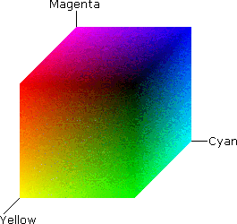

2.5.2 颜料三原色色彩空间（CMY / CMYK Color Space）
颜料三原色色彩空间，根据其是否包含对黑色（Black）的描述，被分为 印刷三分色模型（CMY Color Space） 即 CMY 色彩空间，和 印刷四分色模型（CMYK Color Space） 即 CMYK 色彩空间。其中，CMY 即指代颜料三原色，K 则为 Black 取尾字母，以和纯蓝色（Blue）作为区分。 颜料三原色色彩空间，是对颜色的减法混合论的直接应用。

图 2-20 颜料三原色色彩空间（CMY/CMYK Color Space）坐标系
对于 CMY 色彩空间，如果记目标颜色为 CCMY ，那么 配色函数 为：
CCMY=C⋅Cyan+M⋅Magenta+Y⋅Yellow=Vector[C,M,Y]
可以发现 CMY 色彩空间与 RGB 色彩空间，恰好以立方体质心堆成。因此存在转换：
CCMY=1−CRGB
印刷三分色模型最早被应用于人们于绘画中。通过对颜料三原色的调色板混合，可以形成不同的颜色。由于 CMY 色彩空间在人类历史长河中，已被应用于绘画创作许久，因此这个颜色空间较难追溯最初的提出者了。不过真正对颜料三原色进行色彩空间的标准化工作，还是在打印机被发明后。
无论是喷墨打印机、照相打印机，还是激光打印机。打印出的结果都是依靠反射光被人们观察到的。这决定了此类型工程和绘画基本一致。早期打印机采用 CMY 色彩空间，并用红、青、黄三色混合，来实现黑色的显示。但是，这样混合出的黑色在显示上偏红黑。为了应对这种现象，人们在工程上引入了独立的黑色墨盒，以求解决黑色的打印问题。因此，为了描述被独立引入的黑色在颜色还原上的转换，提出了 CMYK 色彩空间。
CMYK 色彩空间，对黑色进行了重设。如果记目标颜色为 CCMYK ，那么配色函数为：
CCMYK=C⋅Cyan+M⋅Magenta+Y⋅Yellow+K⋅Black=Vector[C,M,Y,K]
由于 CMYK 比 CMY 多一维度K，从 CMY 到 CMYK 的映射就需要进行升维。
记 K=1 时， CCMYK=Vector[0, 0, 0, 1] ，那么 K≠1 时就有：
⎣⎢⎢⎡CMYK⎦⎥⎥⎤=⎣⎢⎢⎡(C′−K)/(1−K)(M′−K)/(1−K)(Y′−K)/(1−K)K⎦⎥⎥⎤ ∣ [K=min(C′,M′,Y′), K≠1]
而从 CMYK 到 CMY 的映射，就简单了：
⎣⎡C′M′Y′⎦⎤=⎣⎡(1−K)⋅C+K(1−K)⋅M+K(1−K)⋅Y+K⎦⎤
而对于 CYMK 色彩空间和 RGB 色彩空间互转，就有需要以 CMY 色彩空间作为桥梁。先根据转换方向，通过 CMY 色彩空间进行 CRGB→CCMY 或者 CCMYK→CCMY ，再通过 CMY 与 RGB 与 CMYK 的关系，进行间接转换。